About
This page hosts the hg_sdf library for building signed distance functions (or more precise: signed distance bounds). Those are a very elegant and flexible representation of geometry that can be rendered or otherwise processed. Roughly, coded SDFs are to triangle meshes or voxels what vector graphics are to pixels.
Building them is not easy yet. This is a bit like writing svg files by hand. Except fun.
This lib is the one that we used ourselves to make 64k intros like the timeless and on, straight from our version control system. Much of what we learned from those productions ended up in here. This includes the following items:
- A Collection of distance functions for primitives: Boxes, cones, cylinders, tori, blobby balls, you name it. This is the boring part.
- An Assortment of space-folding operators. Get an infinite amount of objects for the price of 1.3!
- An Arsenal of boolean operators to combine objects. Add fancy bevels of all kinds where objects meet or create entire nontrivial new objects from seemingly nothing! Be the envy of your fellow sceners!
All info on this page (except for the screenshots) can also be found in the source code, which is the definitive source. It also contains a FAQ and instructions on how to use the individual functions.
Version history
- 2015-12-15 - Initial release
- 2016-01-02 - Website Update, more operators, better implementation:
- More compact and branchless implementation of some ops, courtesy of @paniq, thanks! The stairs operator now behaves in a subtly different way (surface stays the same, only field inside changes). Comparison Image (top is new).
- Added more examples of operators that are non-boolean (groove, tongue, engrave).
- 2015-01-04 - Trivial update: replace all sign with sgn, thanks to @SeargeDP.
{kind=link}
How to use this
- Build some system to #include glsl files in each other. Include this one at the very start. Or just paste everywhere.
- Build a sphere tracer. See those papers:
- Sphere Tracing
- Enhanced Sphere Tracing (contains HLSL sample code)
- Use the tools in this library to build your distance bound f(). Maybe watch this talk from nvscene 2015, where you can watch an earlier version of this library in action. Maybe actually read all the comments that we added to the code for you.
- ???
- Attend a Demoparty and win a compo.
Why use this?
The point of this lib is that everything is structured according to patterns that we ended up using when building geometry. It makes it more easy to write code that is reusable and that somebody else can actually understand. Especially code on Shadertoy (which seems to be what everybody else is looking at for "inspiration") tends to be really ugly. So we were forced to do something about the situation and release this lib ;)
Everything in here can probably be done in some better way. Please experiment. We'd love some feedback, especially if you use it in a scene production.
The main patterns for building geometry this way are:
- Stay Lipschitz continuous. That means: don't have any distance gradient larger than 1. Try to be as close to 1 as possible - Distances are euclidean distances, don't fudge around. Underestimating distances will happen. That's why calling it a "distance bound" is more correct. Don't ever multiply distances by some value to "fix" a Lipschitz continuity violation. The invariant is: each fSomething() function returns a correct distance bound.
- Use very few primitives and combine them as building blocks using combine operators that preserve the invariant.
- Multiply objects by repeating the domain (space). If you are using a loop inside your distance function, you are probably doing it wrong (or you are building boring fractals).
- At right-angle intersections between objects, build a new local coordinate system from the two distances to combine them in interesting ways.
- As usual, there are always times when it is best to not follow specific patterns.
Examples
Boolean Operators
// the following images were made using this piece of code float fBoolOps(vec3 p) { float box = fBox(p,vec3(1)); float sphere = length(p-vec3(1))-1; float d; float r = 0.3; float n = 4; switch (int(showcase_opIndex)) { case 0: d = min(box,sphere); break; case 1: d = max(box,sphere); break; case 2: d = max(box,-sphere); break; case 3: d = fOpUnionRound(box,sphere,r); break; case 4: d = fOpIntersectionRound(box,sphere,r); break; case 5: d = fOpDifferenceRound(box,sphere,r); break; case 6: d = fOpUnionChamfer(box,sphere,r); break; case 7: d = fOpIntersectionChamfer(box,sphere,r); break; case 8: d = fOpDifferenceChamfer(box,sphere,r); break; case 9 : d = fOpUnionColumns(box,sphere,r,n); break; case 10: d = fOpIntersectionColumns(box,sphere,r,n); break; case 11: d = fOpDifferenceColumns(box,sphere,r,n); break; case 12: d = fOpUnionStairs(box,sphere,r,n); break; case 13: d = fOpIntersectionStairs(box,sphere,r,n); break; case 14: d = fOpDifferenceStairs(box,sphere,r,n); break; case 15: d = fOpPipe(box,sphere,r*0.3); break; case 16: d = fOpEngrave(box,sphere,r*0.3); break; case 17: d = fOpGroove(box,sphere,r*0.3, r*0.3); break; case 18: d = fOpTongue(box,sphere,r*0.3, r*0.3); break; // The implementation of the next one is left as an exercise to the reader: case 19: d = fOpFuckingBaroquePictureFrame(box,sphere,r); break; } return d; }
fOpUnionRound

fOpUnionChamfer

fOpUnionColumns

fOpUnionStairs

fOpIntersectionRound

fOpIntersectionChamfer

fOpIntersectionColumns

fOpIntersectionStairs

fOpDifferenceRound
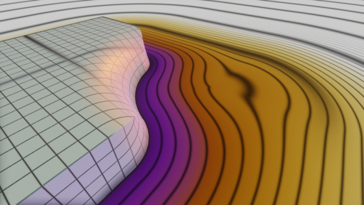fOpDifferenceChamfer
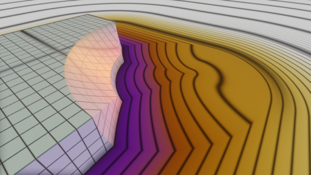fOpDifferenceColumns
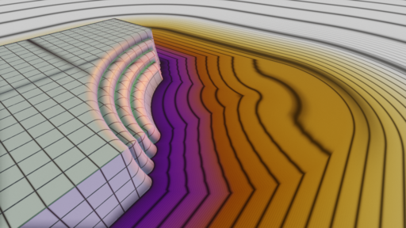fOpDifferenceStairs
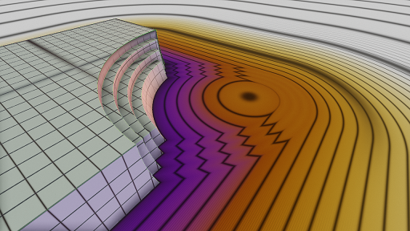fOpPipe

fOpEngrave

fOpGroove

fOpTongue

fOpFuckingBaroquePictureFrame
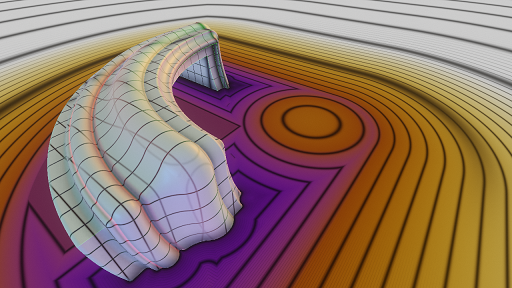Domain Operators
// the following images were made using this piece of code float fDomainOps(vec3 p) { float size = 5; float c = 0; switch (int(showcase_opIndex)) { case 0: break; // scene without any domain manipulation case 1: c = pMod1(p.x,size); break; case 2: c = pModSingle1(p.x,size); break; case 3: c = pModInterval1(p.x,size,1,3); break; case 4: c = pModPolar(p.xz,7); p -= vec3(10,0,0); break; case 5: pMod2(p.xz,vec2(size)); break; case 6: pModMirror2(p.xz,vec2(size)); break; case 7: pMod3(p,vec3(size)); break; } // you could use the cell index for something: // p.y -= c*0.3; // the repeated geometry: float box = fBox(p, vec3(1)); float sphere = length(p - vec3(1)) - 1; float d = min(box,sphere); // guard object to prevent discontinuities between cells // (which could lead to stepping into neighbouring cells). // doing this specific to the domain operator normally makes // more sense than this all-purpose guard. //negative box: float guard = -fBoxCheap(p, vec3(size*0.5)); // only positive values, but gets small near the box surface: guard = abs(guard) + size*0.1; return min(d,guard); }
pMod1
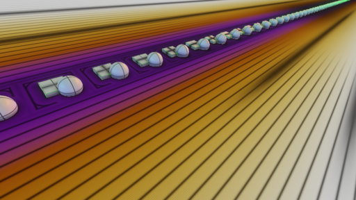pModSingle1
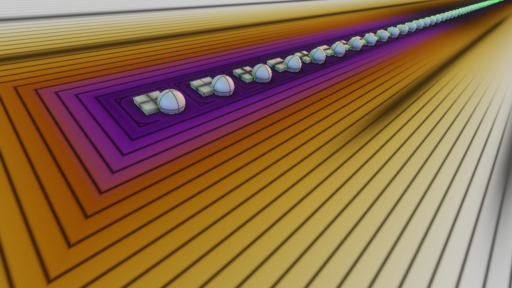pModInterval1
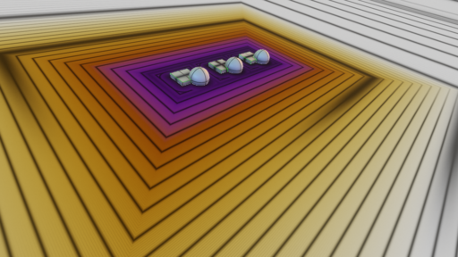pModPolar
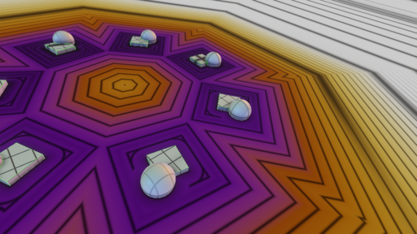pMod2
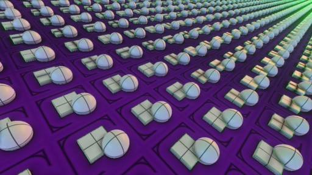pModMirror2
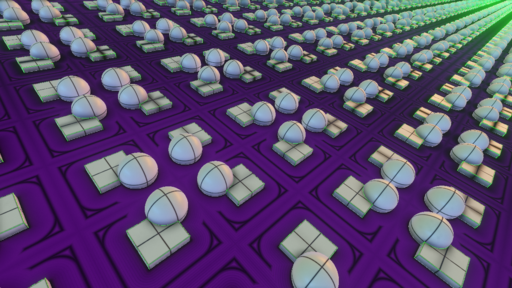pMod3
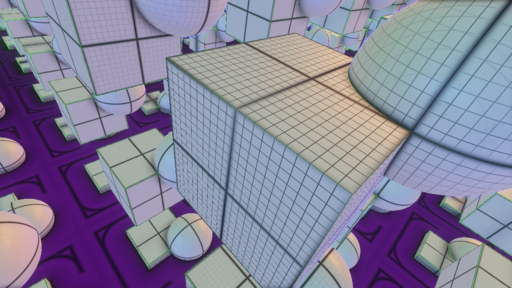Code
//////////////////////////////////////////////////////////////// // // HG_SDF // // GLSL LIBRARY FOR BUILDING SIGNED DISTANCE BOUNDS // // version 2016-01-10 // // Check http://mercury.sexy/hg_sdf for updates // and usage examples. Send feedback to spheretracing@mercury.sexy. // // Brought to you by MERCURY http://mercury.sexy // // // // Released as Creative Commons Attribution-NonCommercial (CC BY-NC) // //////////////////////////////////////////////////////////////// // // How to use this: // // 1. Build some system to #include glsl files in each other. // Include this one at the very start. Or just paste everywhere. // 2. Build a sphere tracer. See those papers: // * "Sphere Tracing" http://graphics.cs.illinois.edu/sites/default/files/zeno.pdf // * "Enhanced Sphere Tracing" http://lgdv.cs.fau.de/get/2234 // The Raymnarching Toolbox Thread on pouet can be helpful as well // http://www.pouet.net/topic.php?which=7931&page=1 // and contains links to many more resources. // 3. Use the tools in this library to build your distance bound f(). // 4. ??? // 5. Win a compo. // // (6. Buy us a beer or a good vodka or something, if you like.) // //////////////////////////////////////////////////////////////// // // Table of Contents: // // * Helper functions and macros // * Collection of some primitive objects // * Domain Manipulation operators // * Object combination operators // //////////////////////////////////////////////////////////////// // // Why use this? // // The point of this lib is that everything is structured according // to patterns that we ended up using when building geometry. // It makes it more easy to write code that is reusable and that somebody // else can actually understand. Especially code on Shadertoy (which seems // to be what everybody else is looking at for "inspiration") tends to be // really ugly. So we were forced to do something about the situation and // release this lib ;) // // Everything in here can probably be done in some better way. // Please experiment. We'd love some feedback, especially if you // use it in a scene production. // // The main patterns for building geometry this way are: // * Stay Lipschitz continuous. That means: don't have any distance // gradient larger than 1. Try to be as close to 1 as possible - // Distances are euclidean distances, don't fudge around. // Underestimating distances will happen. That's why calling // it a "distance bound" is more correct. Don't ever multiply // distances by some value to "fix" a Lipschitz continuity // violation. The invariant is: each fSomething() function returns // a correct distance bound. // * Use very few primitives and combine them as building blocks // using combine opertors that preserve the invariant. // * Multiply objects by repeating the domain (space). // If you are using a loop inside your distance function, you are // probably doing it wrong (or you are building boring fractals). // * At right-angle intersections between objects, build a new local // coordinate system from the two distances to combine them in // interesting ways. // * As usual, there are always times when it is best to not follow // specific patterns. // //////////////////////////////////////////////////////////////// // // FAQ // // Q: Why is there no sphere tracing code in this lib? // A: Because our system is way too complex and always changing. // This is the constant part. Also we'd like everyone to // explore for themselves. // // Q: This does not work when I paste it into Shadertoy!!!! // A: Yes. It is GLSL, not GLSL ES. We like real OpenGL // because it has way more features and is more likely // to work compared to browser-based WebGL. We recommend // you consider using OpenGL for your productions. Most // of this can be ported easily though. // // Q: How do I material? // A: We recommend something like this: // Write a material ID, the distance and the local coordinate // p into some global variables whenever an object's distance is // smaller than the stored distance. Then, at the end, evaluate // the material to get color, roughness, etc., and do the shading. // // Q: I found an error. Or I made some function that would fit in // in this lib. Or I have some suggestion. // A: Awesome! Drop us a mail at spheretracing@mercury.sexy. // // Q: Why is this not on github? // A: Because we were too lazy. If we get bugged about it enough, // we'll do it. // // Q: Your license sucks for me. // A: Oh. What should we change it to? // // Q: I have trouble understanding what is going on with my distances. // A: Some visualization of the distance field helps. Try drawing a // plane that you can sweep through your scene with some color // representation of the distance field at each point and/or iso // lines at regular intervals. Visualizing the length of the // gradient (or better: how much it deviates from being equal to 1) // is immensely helpful for understanding which parts of the // distance field are broken. // //////////////////////////////////////////////////////////////// //////////////////////////////////////////////////////////////// // // HELPER FUNCTIONS/MACROS // //////////////////////////////////////////////////////////////// #define PI 3.14159265 #define TAU (2*PI) #define PHI (sqrt(5)*0.5 + 0.5) // Clamp to [0,1] - this operation is free under certain circumstances. // For further information see // http://www.humus.name/Articles/Persson_LowLevelThinking.pdf and // http://www.humus.name/Articles/Persson_LowlevelShaderOptimization.pdf #define saturate(x) clamp(x, 0, 1) // Sign function that doesn't return 0 float sgn(float x) { return (x<0)?-1:1; } vec2 sgn(vec2 v) { return vec2((v.x<0)?-1:1, (v.y<0)?-1:1); } float square (float x) { return x*x; } vec2 square (vec2 x) { return x*x; } vec3 square (vec3 x) { return x*x; } float lengthSqr(vec3 x) { return dot(x, x); } // Maximum/minumum elements of a vector float vmax(vec2 v) { return max(v.x, v.y); } float vmax(vec3 v) { return max(max(v.x, v.y), v.z); } float vmax(vec4 v) { return max(max(v.x, v.y), max(v.z, v.w)); } float vmin(vec2 v) { return min(v.x, v.y); } float vmin(vec3 v) { return min(min(v.x, v.y), v.z); } float vmin(vec4 v) { return min(min(v.x, v.y), min(v.z, v.w)); } //////////////////////////////////////////////////////////////// // // PRIMITIVE DISTANCE FUNCTIONS // //////////////////////////////////////////////////////////////// // // Conventions: // // Everything that is a distance function is called fSomething. // The first argument is always a point in 2 or 3-space called <p>. // Unless otherwise noted, (if the object has an intrinsic "up" // side or direction) the y axis is "up" and the object is // centered at the origin. // //////////////////////////////////////////////////////////////// float fSphere(vec3 p, float r) { return length(p) - r; } // Plane with normal n (n is normalized) at some distance from the origin float fPlane(vec3 p, vec3 n, float distanceFromOrigin) { return dot(p, n) + distanceFromOrigin; } // Cheap Box: distance to corners is overestimated float fBoxCheap(vec3 p, vec3 b) { //cheap box return vmax(abs(p) - b); } // Box: correct distance to corners float fBox(vec3 p, vec3 b) { vec3 d = abs(p) - b; return length(max(d, vec3(0))) + vmax(min(d, vec3(0))); } // Same as above, but in two dimensions (an endless box) float fBox2Cheap(vec2 p, vec2 b) { return vmax(abs(p)-b); } float fBox2(vec2 p, vec2 b) { vec2 d = abs(p) - b; return length(max(d, vec2(0))) + vmax(min(d, vec2(0))); } // Endless "corner" float fCorner (vec2 p) { return length(max(p, vec2(0))) + vmax(min(p, vec2(0))); } // Blobby ball object. You've probably seen it somewhere. This is not a correct distance bound, beware. float fBlob(vec3 p) { p = abs(p); if (p.x < max(p.y, p.z)) p = p.yzx; if (p.x < max(p.y, p.z)) p = p.yzx; float b = max(max(max( dot(p, normalize(vec3(1, 1, 1))), dot(p.xz, normalize(vec2(PHI+1, 1)))), dot(p.yx, normalize(vec2(1, PHI)))), dot(p.xz, normalize(vec2(1, PHI)))); float l = length(p); return l - 1.5 - 0.2 * (1.5 / 2)* cos(min(sqrt(1.01 - b / l)*(PI / 0.25), PI)); } // Cylinder standing upright on the xz plane float fCylinder(vec3 p, float r, float height) { float d = length(p.xz) - r; d = max(d, abs(p.y) - height); return d; } // Capsule: A Cylinder with round caps on both sides float fCapsule(vec3 p, float r, float c) { return mix(length(p.xz) - r, length(vec3(p.x, abs(p.y) - c, p.z)) - r, step(c, abs(p.y))); } // Distance to line segment between <a> and <b>, used for fCapsule() version 2below float fLineSegment(vec3 p, vec3 a, vec3 b) { vec3 ab = b - a; float t = saturate(dot(p - a, ab) / dot(ab, ab)); return length((ab*t + a) - p); } // Capsule version 2: between two end points <a> and <b> with radius r float fCapsule(vec3 p, vec3 a, vec3 b, float r) { return fLineSegment(p, a, b) - r; } // Torus in the XZ-plane float fTorus(vec3 p, float smallRadius, float largeRadius) { return length(vec2(length(p.xz) - largeRadius, p.y)) - smallRadius; } // A circle line. Can also be used to make a torus by subtracting the smaller radius of the torus. float fCircle(vec3 p, float r) { float l = length(p.xz) - r; return length(vec2(p.y, l)); } // A circular disc with no thickness (i.e. a cylinder with no height). // Subtract some value to make a flat disc with rounded edge. float fDisc(vec3 p, float r) { float l = length(p.xz) - r; return l < 0 ? abs(p.y) : length(vec2(p.y, l)); } // Hexagonal prism, circumcircle variant float fHexagonCircumcircle(vec3 p, vec2 h) { vec3 q = abs(p); return max(q.y - h.y, max(q.x*sqrt(3)*0.5 + q.z*0.5, q.z) - h.x); //this is mathematically equivalent to this line, but less efficient: //return max(q.y - h.y, max(dot(vec2(cos(PI/3), sin(PI/3)), q.zx), q.z) - h.x); } // Hexagonal prism, incircle variant float fHexagonIncircle(vec3 p, vec2 h) { return fHexagonCircumcircle(p, vec2(h.x*sqrt(3)*0.5, h.y)); } // Cone with correct distances to tip and base circle. Y is up, 0 is in the middle of the base. float fCone(vec3 p, float radius, float height) { vec2 q = vec2(length(p.xz), p.y); vec2 tip = q - vec2(0, height); vec2 mantleDir = normalize(vec2(height, radius)); float mantle = dot(tip, mantleDir); float d = max(mantle, -q.y); float projected = dot(tip, vec2(mantleDir.y, -mantleDir.x)); // distance to tip if ((q.y > height) && (projected < 0)) { d = max(d, length(tip)); } // distance to base ring if ((q.x > radius) && (projected > length(vec2(height, radius)))) { d = max(d, length(q - vec2(radius, 0))); } return d; } // // "Generalized Distance Functions" by Akleman and Chen. // see the Paper at https://www.viz.tamu.edu/faculty/ergun/research/implicitmodeling/papers/sm99.pdf // // This set of constants is used to construct a large variety of geometric primitives. // Indices are shifted by 1 compared to the paper because we start counting at Zero. // Some of those are slow whenever a driver decides to not unroll the loop, // which seems to happen for fIcosahedron und fTruncatedIcosahedron on nvidia 350.12 at least. // Specialized implementations can well be faster in all cases. // const vec3 GDFVectors[19] = vec3[]( normalize(vec3(1, 0, 0)), normalize(vec3(0, 1, 0)), normalize(vec3(0, 0, 1)), normalize(vec3(1, 1, 1 )), normalize(vec3(-1, 1, 1)), normalize(vec3(1, -1, 1)), normalize(vec3(1, 1, -1)), normalize(vec3(0, 1, PHI+1)), normalize(vec3(0, -1, PHI+1)), normalize(vec3(PHI+1, 0, 1)), normalize(vec3(-PHI-1, 0, 1)), normalize(vec3(1, PHI+1, 0)), normalize(vec3(-1, PHI+1, 0)), normalize(vec3(0, PHI, 1)), normalize(vec3(0, -PHI, 1)), normalize(vec3(1, 0, PHI)), normalize(vec3(-1, 0, PHI)), normalize(vec3(PHI, 1, 0)), normalize(vec3(-PHI, 1, 0)) ); // Version with variable exponent. // This is slow and does not produce correct distances, but allows for bulging of objects. float fGDF(vec3 p, float r, float e, int begin, int end) { float d = 0; for (int i = begin; i <= end; ++i) d += pow(abs(dot(p, GDFVectors[i])), e); return pow(d, 1/e) - r; } // Version with without exponent, creates objects with sharp edges and flat faces float fGDF(vec3 p, float r, int begin, int end) { float d = 0; for (int i = begin; i <= end; ++i) d = max(d, abs(dot(p, GDFVectors[i]))); return d - r; } // Primitives follow: float fOctahedron(vec3 p, float r, float e) { return fGDF(p, r, e, 3, 6); } float fDodecahedron(vec3 p, float r, float e) { return fGDF(p, r, e, 13, 18); } float fIcosahedron(vec3 p, float r, float e) { return fGDF(p, r, e, 3, 12); } float fTruncatedOctahedron(vec3 p, float r, float e) { return fGDF(p, r, e, 0, 6); } float fTruncatedIcosahedron(vec3 p, float r, float e) { return fGDF(p, r, e, 3, 18); } float fOctahedron(vec3 p, float r) { return fGDF(p, r, 3, 6); } float fDodecahedron(vec3 p, float r) { return fGDF(p, r, 13, 18); } float fIcosahedron(vec3 p, float r) { return fGDF(p, r, 3, 12); } float fTruncatedOctahedron(vec3 p, float r) { return fGDF(p, r, 0, 6); } float fTruncatedIcosahedron(vec3 p, float r) { return fGDF(p, r, 3, 18); } //////////////////////////////////////////////////////////////// // // DOMAIN MANIPULATION OPERATORS // //////////////////////////////////////////////////////////////// // // Conventions: // // Everything that modifies the domain is named pSomething. // // Many operate only on a subset of the three dimensions. For those, // you must choose the dimensions that you want manipulated // by supplying e.g. <p.x> or <p.zx> // // <inout p> is always the first argument and modified in place. // // Many of the operators partition space into cells. An identifier // or cell index is returned, if possible. This return value is // intended to be optionally used e.g. as a random seed to change // parameters of the distance functions inside the cells. // // Unless stated otherwise, for cell index 0, <p> is unchanged and cells // are centered on the origin so objects don't have to be moved to fit. // // //////////////////////////////////////////////////////////////// // Rotate around a coordinate axis (i.e. in a plane perpendicular to that axis) by angle <a>. // Read like this: R(p.xz, a) rotates "x towards z". // This is fast if <a> is a compile-time constant and slower (but still practical) if not. void pR(inout vec2 p, float a) { p = cos(a)*p + sin(a)*vec2(p.y, -p.x); } // Shortcut for 45-degrees rotation void pR45(inout vec2 p) { p = (p + vec2(p.y, -p.x))*sqrt(0.5); } // Repeat space along one axis. Use like this to repeat along the x axis: // <float cell = pMod1(p.x,5);> - using the return value is optional. float pMod1(inout float p, float size) { float halfsize = size*0.5; float c = floor((p + halfsize)/size); p = mod(p + halfsize, size) - halfsize; return c; } // Same, but mirror every second cell so they match at the boundaries float pModMirror1(inout float p, float size) { float halfsize = size*0.5; float c = floor((p + halfsize)/size); p = mod(p + halfsize,size) - halfsize; p *= mod(c, 2.0)*2 - 1; return c; } // Repeat the domain only in positive direction. Everything in the negative half-space is unchanged. float pModSingle1(inout float p, float size) { float halfsize = size*0.5; float c = floor((p + halfsize)/size); if (p >= 0) p = mod(p + halfsize, size) - halfsize; return c; } // Repeat only a few times: from indices <start> to <stop> (similar to above, but more flexible) float pModInterval1(inout float p, float size, float start, float stop) { float halfsize = size*0.5; float c = floor((p + halfsize)/size); p = mod(p+halfsize, size) - halfsize; if (c > stop) { //yes, this might not be the best thing numerically. p += size*(c - stop); c = stop; } if (c <start) { p += size*(c - start); c = start; } return c; } // Repeat around the origin by a fixed angle. // For easier use, num of repetitions is use to specify the angle. float pModPolar(inout vec2 p, float repetitions) { float angle = 2*PI/repetitions; float a = atan(p.y, p.x) + angle/2.; float r = length(p); float c = floor(a/angle); a = mod(a,angle) - angle/2.; p = vec2(cos(a), sin(a))*r; // For an odd number of repetitions, fix cell index of the cell in -x direction // (cell index would be e.g. -5 and 5 in the two halves of the cell): if (abs(c) >= (repetitions/2)) c = abs(c); return c; } // Repeat in two dimensions vec2 pMod2(inout vec2 p, vec2 size) { vec2 c = floor((p + size*0.5)/size); p = mod(p + size*0.5,size) - size*0.5; return c; } // Same, but mirror every second cell so all boundaries match vec2 pModMirror2(inout vec2 p, vec2 size) { vec2 halfsize = size*0.5; vec2 c = floor((p + halfsize)/size); p = mod(p + halfsize, size) - halfsize; p *= mod(c,vec2(2))*2 - vec2(1); return c; } // Same, but mirror every second cell at the diagonal as well vec2 pModGrid2(inout vec2 p, vec2 size) { vec2 c = floor((p + size*0.5)/size); p = mod(p + size*0.5, size) - size*0.5; p *= mod(c,vec2(2))*2 - vec2(1); p -= size/2; if (p.x > p.y) p.xy = p.yx; return floor(c/2); } // Repeat in three dimensions vec3 pMod3(inout vec3 p, vec3 size) { vec3 c = floor((p + size*0.5)/size); p = mod(p + size*0.5, size) - size*0.5; return c; } // Mirror at an axis-aligned plane which is at a specified distance <dist> from the origin. float pMirror (inout float p, float dist) { float s = sgn(p); p = abs(p)-dist; return s; } // Mirror in both dimensions and at the diagonal, yielding one eighth of the space. // translate by dist before mirroring. vec2 pMirrorOctant (inout vec2 p, vec2 dist) { vec2 s = sgn(p); pMirror(p.x, dist.x); pMirror(p.y, dist.y); if (p.y > p.x) p.xy = p.yx; return s; } // Reflect space at a plane float pReflect(inout vec3 p, vec3 planeNormal, float offset) { float t = dot(p, planeNormal)+offset; if (t < 0) { p = p - (2*t)*planeNormal; } return sgn(t); } //////////////////////////////////////////////////////////////// // // OBJECT COMBINATION OPERATORS // //////////////////////////////////////////////////////////////// // // We usually need the following boolean operators to combine two objects: // Union: OR(a,b) // Intersection: AND(a,b) // Difference: AND(a,!b) // (a and b being the distances to the objects). // // The trivial implementations are min(a,b) for union, max(a,b) for intersection // and max(a,-b) for difference. To combine objects in more interesting ways to // produce rounded edges, chamfers, stairs, etc. instead of plain sharp edges we // can use combination operators. It is common to use some kind of "smooth minimum" // instead of min(), but we don't like that because it does not preserve Lipschitz // continuity in many cases. // // Naming convention: since they return a distance, they are called fOpSomething. // The different flavours usually implement all the boolean operators above // and are called fOpUnionRound, fOpIntersectionRound, etc. // // The basic idea: Assume the object surfaces intersect at a right angle. The two // distances <a> and <b> constitute a new local two-dimensional coordinate system // with the actual intersection as the origin. In this coordinate system, we can // evaluate any 2D distance function we want in order to shape the edge. // // The operators below are just those that we found useful or interesting and should // be seen as examples. There are infinitely more possible operators. // // They are designed to actually produce correct distances or distance bounds, unlike // popular "smooth minimum" operators, on the condition that the gradients of the two // SDFs are at right angles. When they are off by more than 30 degrees or so, the // Lipschitz condition will no longer hold (i.e. you might get artifacts). The worst // case is parallel surfaces that are close to each other. // // Most have a float argument <r> to specify the radius of the feature they represent. // This should be much smaller than the object size. // // Some of them have checks like "if ((-a < r) && (-b < r))" that restrict // their influence (and computation cost) to a certain area. You might // want to lift that restriction or enforce it. We have left it as comments // in some cases. // // usage example: // // float fTwoBoxes(vec3 p) { // float box0 = fBox(p, vec3(1)); // float box1 = fBox(p-vec3(1), vec3(1)); // return fOpUnionChamfer(box0, box1, 0.2); // } // //////////////////////////////////////////////////////////////// // The "Chamfer" flavour makes a 45-degree chamfered edge (the diagonal of a square of size <r>): float fOpUnionChamfer(float a, float b, float r) { return min(min(a, b), (a - r + b)*sqrt(0.5)); } // Intersection has to deal with what is normally the inside of the resulting object // when using union, which we normally don't care about too much. Thus, intersection // implementations sometimes differ from union implementations. float fOpIntersectionChamfer(float a, float b, float r) { return max(max(a, b), (a + r + b)*sqrt(0.5)); } // Difference can be built from Intersection or Union: float fOpDifferenceChamfer (float a, float b, float r) { return fOpIntersectionChamfer(a, -b, r); } // The "Round" variant uses a quarter-circle to join the two objects smoothly: float fOpUnionRound(float a, float b, float r) { vec2 u = max(vec2(r - a,r - b), vec2(0)); return max(r, min (a, b)) - length(u); } float fOpIntersectionRound(float a, float b, float r) { vec2 u = max(vec2(r + a,r + b), vec2(0)); return min(-r, max (a, b)) + length(u); } float fOpDifferenceRound (float a, float b, float r) { return fOpIntersectionRound(a, -b, r); } // The "Columns" flavour makes n-1 circular columns at a 45 degree angle: float fOpUnionColumns(float a, float b, float r, float n) { if ((a < r) && (b < r)) { vec2 p = vec2(a, b); float columnradius = r*sqrt(2)/((n-1)*2+sqrt(2)); pR45(p); p.x -= sqrt(2)/2*r; p.x += columnradius*sqrt(2); if (mod(n,2) == 1) { p.y += columnradius; } // At this point, we have turned 45 degrees and moved at a point on the // diagonal that we want to place the columns on. // Now, repeat the domain along this direction and place a circle. pMod1(p.y, columnradius*2); float result = length(p) - columnradius; result = min(result, p.x); result = min(result, a); return min(result, b); } else { return min(a, b); } } float fOpDifferenceColumns(float a, float b, float r, float n) { a = -a; float m = min(a, b); //avoid the expensive computation where not needed (produces discontinuity though) if ((a < r) && (b < r)) { vec2 p = vec2(a, b); float columnradius = r*sqrt(2)/n/2.0; columnradius = r*sqrt(2)/((n-1)*2+sqrt(2)); pR45(p); p.y += columnradius; p.x -= sqrt(2)/2*r; p.x += -columnradius*sqrt(2)/2; if (mod(n,2) == 1) { p.y += columnradius; } pMod1(p.y,columnradius*2); float result = -length(p) + columnradius; result = max(result, p.x); result = min(result, a); return -min(result, b); } else { return -m; } } float fOpIntersectionColumns(float a, float b, float r, float n) { return fOpDifferenceColumns(a,-b,r, n); } // The "Stairs" flavour produces n-1 steps of a staircase: // much less stupid version by paniq float fOpUnionStairs(float a, float b, float r, float n) { float s = r/n; float u = b-r; return min(min(a,b), 0.5 * (u + a + abs ((mod (u - a + s, 2 * s)) - s))); } // We can just call Union since stairs are symmetric. float fOpIntersectionStairs(float a, float b, float r, float n) { return -fOpUnionStairs(-a, -b, r, n); } float fOpDifferenceStairs(float a, float b, float r, float n) { return -fOpUnionStairs(-a, b, r, n); } // Similar to fOpUnionRound, but more lipschitz-y at acute angles // (and less so at 90 degrees). Useful when fudging around too much // by MediaMolecule, from Alex Evans' siggraph slides float fOpUnionSoft(float a, float b, float r) { float e = max(r - abs(a - b), 0); return min(a, b) - e*e*0.25/r; } // produces a cylindical pipe that runs along the intersection. // No objects remain, only the pipe. This is not a boolean operator. float fOpPipe(float a, float b, float r) { return length(vec2(a, b)) - r; } // first object gets a v-shaped engraving where it intersect the second float fOpEngrave(float a, float b, float r) { return max(a, (a + r - abs(b))*sqrt(0.5)); } // first object gets a capenter-style groove cut out float fOpGroove(float a, float b, float ra, float rb) { return max(a, min(a + ra, rb - abs(b))); } // first object gets a capenter-style tongue attached float fOpTongue(float a, float b, float ra, float rb) { return min(a, max(a - ra, abs(b) - rb)); }
Now go make an intro.
Website by mercury and ps0ke of rtificial